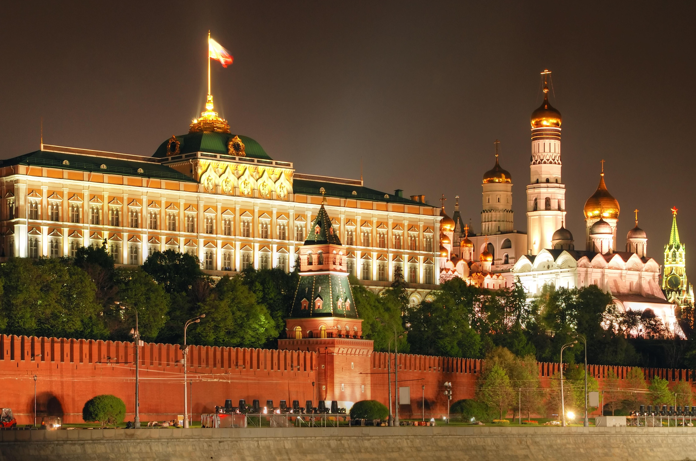

is a transcontinental country spanning Eastern Europe and Northern Asia. It is the largest country in the world by area, covering over 17,125,191 square kilometres (6,612,073 sq mi), and encompassing one-eighth of Earth's inhabitable landmass. Russia extends across eleven time zones and borders sixteen sovereign nations, the most of any country in the world. It is theninth-most populous country and the most populous country in Europe, with a population of 145.5 million. The country's capital and largest city is Moscow, the largest city entirely within Europe. Saint Petersburg is Russia's cultural centre and second-largest city. Other major urban areas include Novosibirsk, Yekaterinburg, Nizhny Novgorod and Kazan.The East Slavs emerged as a recognisable group in Europe between the 3rd and 8th centuries AD. The medieval state of Kievan Rus' arose in the 9th century. In 988, it adopted Orthodox Christianity from the Byzantine Empire. Rus' ultimately disintegrated, and among its principalities, the Grand Duchy of Moscow rose. By the early 18th century, Russia had vastly expanded through conquest, annexation, and exploration to evolve into the Russian Empire, the third-largest empire in history. The monarchy was abolished following the Russian Revolution in 1917, and the Russian SFSR became the world's first constitutionally socialist state. Following a civil war, the Russian SFSR established the Soviet Union with three other republics, as its largest and the principal constituent. The country underwent a period of rapid industrialisation at the expense of millions of lives. The Soviet Union played a decisive role in the Allied victory in World War II and emerged as a superpower and rival to the United States during the Cold War. The Soviet era saw some of the most significant technological achievements of the 20th century, including the world's first human-made satellite and the launching of the first human into space.Following the dissolution of the Soviet Union in 1991, the newly independent Russian SFSR renamed itself the Russian Federation. In the aftermath of the constitutional crisis of 1993, a new constitution was adopted, and Russia has since been governed as a federal semi-presidential republic. Since his election in 2000, Vladimir Putin has dominated Russia's political system and Russia has experienced democratic backsliding, shifting into an authoritarian state.
the toutist attachments in russia
moscow kremlin
tretyakov gallery
The historic center of Saint Petersburg
white stone monuments of Vladimir and Suzdal
Altai Mountains
Altai Mountains
It is a mountain range in Central Asia , where Russia , China , Mongolia and Kazakhstan meet together, where the sources of the Irtysh and Obi rivers come together . The Altai Mountains are known as the original place of the Turkic race . The South Siberian Altai mountain range is the most prominent mountain range in the biogeographic region of Western Siberia, where the Ob and Irch streams originate. The site comprises three separate areas: Altaisky Zapovdnik, a buffer zone around Lake Teletskoye, a buffer zone around Kotinsky Zapovdnik, and a buffer zone around Belukha Mountain, and Ukok on the Ukok Plateau . The site extends over an area of 1,611,457 hectares and represents the most complete succession of high vegetation zones in Central Siberia : wide plains, broad plains with forests, mixed forests, and vegetation growing in mountainous areas. The site is also the habitat of many threatened animal species such as the snow leopard
geology
During the Carboniferous and Permian periods, Siberia collided with Kazakhstan to form the Altai Mountains. The rock types in these mountains usually consist of
granite and metamorphic rocks , some of which are highly sheared near fault zones.
white stone monuments of Vladimir and Suzdal
It is among the oldest Russian cities that were at the head of the ancient Russian principality of Vladimir-Suzdal in the 12th and 13th centuries and still preserve some unique architectural and artistic features that you will not find anywhere else. Its main features are the white limestone slabs, the impressive proportions, the delicate stone carvings, and the exterior artistic touches of the buildings that all blend in with the surrounding landscape. The most prominent examples of this architectural style are: Uspensky and Dmitrievsky cathedrals in Vladimir, the Golden Gates and the Nativity Cathedral in Suzdal, the ceilings of the Suzdal Kremlin chambers, and the Sepsovo Evfimov and Pokrovsky monasteries. Included in the UNESCO World Heritage List since 1992.
FAMOUS LANDMARKS
Ascension Cathedral
Church of the Intercession on Nirl
Church of Boris and Gleb.
Old Suzdal Kremlin.
Dmitrievsky Cathedral
Golden Gate
Spaso Euthymius Monastery
Andrei Bogolyubsky Palace
The Boris and Gleb Church is the oldest white stone building in these places, dating back to 1152. It was built at the time when the great Russian prince, Yuri Dolgoruky, ruled. All its lines are very simple, they have various decorative elements that look very restrained. According to many sources, the church was badly damaged during the Mongol invasion, but was later restored in 1239. Throughout its existence, the temple was destroyed more than once, and again it happened in the 16-17 centuries. Many of its components were dismantled and stacked again. Interestingly, many archaeological excavations have been carried out here. As a result, scientists were able to find a large number of objects, among them - a white stone sarcophagus, decorative details that previously decorated the church walls, and much more.
The historic center of Saint Petersburg
it is the historical center of Saint Petersburg and its related collections of monuments. The first UNESCO World Heritage Site in the Soviet Union and Russia. It was inscribed on the List of World Heritage Sites at the 14th session of the World Heritage Committee - along with four other Soviet monuments (Moscow Kremlin and Red Square, Saint Sophia Cathedral, Kiev-Pechersk Lavra, Kizhi Pogost and Ichan-Kala). The documents for the session were prepared in emergency mode under the leadership of Yulia Denisova. At first, they debated the inclusion of individual historical and architectural monuments in the list, but soon the opinion prevailed that "the universal value of the cultural and natural landscapes of Greater Saint Petersburg, shaped in a historically short time by the mighty efforts of the Russian state, outweighs the value of its components". The historical center of Saint Petersburg has become one of the first cases in UNESCO's practice of awarding the status of a monument to a huge cultural and natural landscape, where activities are conducted on its territory and in which hundreds of thousands of people live. It even included those objects, whose connection to the center of Saint Petersburg was far from clear, e.g., the ancient Russian fortress of Orikovskaya in the Ladoga and Lindolovskaya grove. Suburban areas include not only palace complexes and parks, but also landscapes, industrial monuments, etc. A typically similar landscape, the Elbe Valley with Dresden (2009) due to plans for a new bridge over the River Elbe. In 2012, the Saint Petersburg government approved the targeted program “Preservation and development of the lands” Konyoshinnaya” and “North Kolomna - New Holland” in the historical center of Saint Petersburg, for the period 2013-2018. As a result of the transition of Saint Petersburg to the method of planning targeted program started in 2014, the program for the preservation of the historical center became part of the state program “Ministry of Economic and Social Development of Saint Petersburg Regions” adopted on June 30, 2014 for a period of 6 years. The implementation of the state program is supervised by the Committee on Economic Policy and Strategic Planning in St. Petersburg. The main expert and advisory body accompanying the implementation of the program is the Council for the Preservation and Development of the Territories of the Historic Center of Saint Petersburg under the Saint Petersburg Government, which was created in 2013. Within the framework of the Program, two areas are allocated in the Historic Center of Saint Petersburg: “Konyoshinaya” and «North Kolomna - New Holland». Ukhta Construction Center Plans to build the Ukhta high-rise center in Saint Petersburg have alarmed UNESCO. In June 2007, New Zealand hosted the 31st session of the UNESCO World Heritage Committee. The plans presented by the participating state on January 18, 2007 and March 5, 2007 do not meet the requirements of the commission, and also do not contain clear boundaries and buffer zones for all objects, including the Leningrad region, and "an urgent recommendation was adopted by the Russian authorities" to suspend the implementation of the project, including Work permits, until all relevant material has been considered, until all relevant material issue and a comprehensive assessment of threats to the World Heritage site are implemented. In December 2010, the Ochota Center project was suspended indefinitely. The plans presented by the participating state on January 18, 2007 and March 5, 2007 do not meet the requirements of the commission, and also do not contain clear boundaries and buffer zones for all objects, including the Leningrad region, and "an urgent recommendation was adopted by the Russian authorities" to suspend the implementation of the project, including Work permits, until all relevant material has been considered, until all relevant material issue and a comprehensive assessment of threats to the World Heritage site are implemented. In December 2010, the Ochota Center project was suspended indefinitely.
Tretyakov Gallery
The gallery's history starts in 1856 when the Moscow merchant Pavel Mikhailovich Tretyakov acquired works by Russian artists of his day with the aim of creating a collection, which might later grow into a museum of national art. In 1892, Tretyakov presented his already famous collection of approximately 2,000 works (1,362 paintings, 526 drawings, and 9 sculptures) to the Russian nation.[1][2] The museum attracted 894,374 (visitors in 2020 (down 68 percent from 2019), due to the COVID-19 pandemic. It was 13th on the list of most-visited art museums in the world in 2020.The façade of the gallery building was designed by the painter Viktor Vasnetsov in a peculiar Russian fairy-tale style. It was built in 1902–04 to the south from the Moscow Kremlin. During the 20th century, the gallery expanded to several neighboring buildings, including the 17th-century church of St. Nicholas in Tolmachi.The collection contains more than 130,000 exhibits, ranging from Theotokos of Vladimir and Andrei Rublev's Trinity to the monumental Composition VII by Wassily Kandinsky and the Black Square by Kazimir .In 1977 the Gallery kept a significant part of the George Costakis collection.

Today, this word is used to refer to the old center of Moscow with its buildings, which is surrounded by a huge wall two and a half miles long and 65 feet high. The Moscow Kremlin is located on Borovitsky Hill, on the left side of the Moskva River, where the Niglinaya River flows. It is about 25 meters hight the Russian Tsar Ivan III (1440-1505, 1462-1505) had in the fifteenth century summoned architects from Russia and Italy to renovate the Kremlin. On the basis of combining the traditions of Russian architecture and Italian architecture of the Renaissance, the Cathedral Square was built. Then new buildings, churches and palaces began to appear in the Kremlin. After the October Revolution of 1917, the authorities turned the Kremlin into the seat of the supreme governing bodies the Moscow Kremlin is located on the Borovitsky Hill, on the left bank of the Moskva River, into which the Niglinaya River flows. The height of the hill is about 25 meters. In the distant past, the land on which the Kremlin is located was dense pine forests. The name "Borovitsky" is derived from the Russian word "bor", which means pine forest.Archaeologists say that the first human foot landed in the "Borovetsky hill" in the late second millennium BC. The first Slavic settlement was established here and laid the foundation for the city of Moscow in the first half of the twelfth century AD.